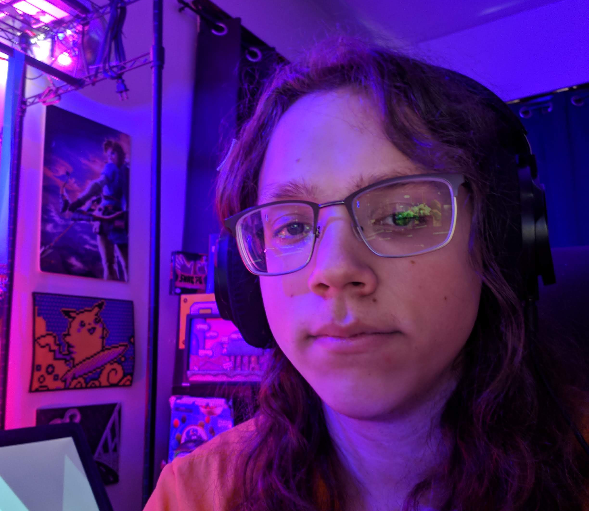

My name is Nathan! I have been doing freelance work online since 2016. In Graphic Design & Digital Illustration, I am entirely self taught: my experience in the art world, though, started in my high school art courses. Most of my traditional art comes from one those courses: AP Studio Art.
I have done work for many groups and individuals. These range from small, personal endeavors to massive, sometimes collaborative projects. I am well versed in Adobe Photoshop and have some experience with InDesign, Premiere Pro and After Effects.